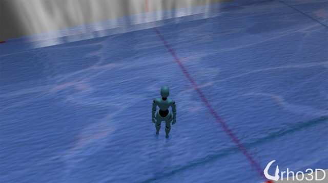
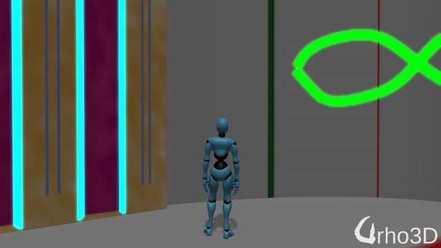
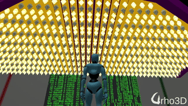

Let me know if I missed any files in my check-in. Thx.
Lumak
screenshot with fire
Lumak
added lava
yushli1
That is great! Thank you very much for sharing this.
Lumak
Glad you like it.
I’m learning as I go, as I never really delved into graphics or shaders. Most likely, I’ll consolidate some of the functionalities currently on the CPU to shaders.
yushli1
Looks like MaterialEffects/Textures/checkers-lightmap.png is missing, which is used in MaterialEffects/Materials/sphLightMapMat.xml. There are checkers-lightmap001.png and checkers-lightmap002.png though.
And in MaterialEffects/Level1.xml, the material is redMat.xml, but the actual file name is RedMat.xml.
And some paths are hard coded, e.g., loading the Level1.xml.
I build and run it and the effects look amazing.
Lumak
ok, thx fixed those isses - repo updated.
The absolute path is required when passing a File, thought. At least for me on Windows.
And lastly, fixed the UnlistAlphaMask shader to remove black edges.
Victor
These are awesome! Thanks for the share!
Lumak
You’re welcome.
Added waterfall and waterdiff shader, you can add a diff material to it.
That’s part of Urho3D distribution and should be in the Data/Textures folder.
Can you give me some feedback on my new water shader? Thx.
suncaller
These have all saved me a good chunk of time, thanks. The water shader is good. I think with ripples, waves, and foam I’d personally be set .
Edit: considering the style, even just foam would be enough to make it “polished” enough to use.
slapin
Thank you so much! This is what I missed. I wonder if it is possible to include these with Urho…
Lumak
@suncaller good to hear. @slapin you’re welcome, I doubt I’ll write scripts for the things that I do - it’s too much work but perhaps someone else can. @yushli1 ok, changed the absolute path.
Update: completed the glsl/hlsl water shaders. There are two versions: 1) WaterDiff - reflective/refractive w/ bump and diff texture, 2) WaterDiffAlpha - same as 1 but w/ alpha.
Also added watersplash(ripple) when char is in run anim - edit:fixed.
Ok, last one. added a water mat waterGroundSandMat.xml with a new normal text. pic: 
sabotage3d
Nice! If you use sprite-sheets it might improve the performance a bit.
Lumak
Great minds think alike , as I was just looking into doing that. I haven’t used the packer tool yet, but just from looking at the code I might have to extend the options to make it easier load ~100 input files.
Lumak
I took some time to rewrite the packer tool and was able to pack the explosion sequence images into a single file w/o any problems, see below. However, eventhough it’s just a straight copy, closer look of the result images show pixelation, see img 2.
Request: Is it possible to add example of leaving vehicle traces on road (when braking or sliding)?
Lumak
Ok, good to know. I also created a tool called SequenceImagePacker and checked it into my repo. Nothing fancy, it just packs same size image and packs it into a single image.
I was using Leshy SpriteSheet Tool before and I made this reader if it is of any use: https://urho3d.prophpbb.com/topic2565.html. I hope your solution is better as I was stuck with this online tool as it generates a nice xml with all the offset especially if they are not linear.
Lumak
What I wrote is nothing like sprite sheet tool**. Because the sequence images are expected to be same size, you can calculate the UV offset if you know the number of rows, cols, and number of images packed in it. I guess that info should be shown at the end or output to a file.
Edit: ** and does not generate an XML file with packed info.
Edit2: only num rows and cols are required to calculate uv offset, num images to know when to terminate.
slapin
Well, the vehicle demo is very complicated and it is hard to factor-out what I need - could you help me?
Lumak
Lumak
I was thinking of include fake BRDF shader in the next update, see pic. Is it too much?
Thank you so much about Skid code sharing (ah, I now know how these are called!).
But how should I place them, where I do get parameters for AddStrip - is it from Raycast?
Which raycast (if that is from raycast) - physics or octree or some other?
Lumak
Now it’s time to study the offroad vehicle and see how they’re placed. In that repo, I called it WheelTrackModel.
slapin
Thanks, that will come for later when I will understand the demo.
For now I will make a fountain…
dragonCASTjosh
Is a fake BRDF really needed since there is a real BRDF in the engine, and performance of the BRDF should be very good to the point where given mobile moves to gles3 (or hack it into gles2) as an options then it would work there without any problems
Lumak
Your work on PBR is excellent and I love what you done with it, and I’m sure it’s something that all would use if going for realism. What fake BRDF offers is a non-realistic rendering that you couldn’t achieve with PBR. Sticking with the mushroom example, take a look at the image 1 below. A is using normal diff mat and B is fakeBRDF, which is achieved by using image 2. Trying to get the effect B using a real BRDF would probably be… I don’t even know if it’s possible. By simply mixing random gradient colors you can achieve some really cool effect and it might be useful for some ppl and their game.
My attempt at post process blur, pic below. I’ll update my repo with all that you see here in a day or two.
edit: changed the pic again to a better one and to demonstrate that only the masked section on the mesh gets blurred. 
suncaller
What fake BRDF offers is a non-realistic rendering that you couldn’t achieve with PBR. Sticking with the mushroom example, take a look at the image 1 below. A is using normal diff mat and B is fakeBRDF, which is achieved by using image 2. Trying to get the effect B using a real BRDF would probably be… I don’t even know if it’s possible. By simply mixing random gradient colors you can achieve some really cool effect and it might be useful for some ppl and their game.
I agree as someone whose project doesn’t aim for photo-realism. That image B is kind of fantastic considering the mesh you’re using.
dragonCASTjosh
PBR doesnt mean realism, it just happens to makes it easier to be realistic by allowed artists to get more accurate metallics and mate materials with less work. It is easily possible to be artistic and stylisised.
That result would likely be possible by using a custom cubemap on a low roughness material in PBR. Although id have to test.
Lumak
I have no doubt you will be able to do it, but us layman who are not all that graphics programming savvy would probably have trouble
suncaller
PBR doesnt mean realism, it just happens to makes it easier to be realistic by allowed artists to get more accurate metallics and mate materials with less work.
This is a good chance to ask you what the intention of the PBR renderer implemented in Urho is, then. Although I understand the concept itself loosely, it also seems to be a loosely defined concept in general from the reading I’ve done on it, and as I’m still a novice when it comes to graphics programming, looking at the code only helps me use and extend it, not understand it completely at this point. As far as I could tell, the single common aim for PBR was realistic light simulation. As this is a more general principal, I imagined there was an unnecessary overhead inherent in its use when we could simplify the desired effects for style, and wrestling to refit the PBR pipeline into all other use-cases would be inefficient. I’d love it if you could demystify this for me.
It is easily possible to be artistic and stylisised.
Of course.
Lumak
Wrapped up the project and checked everything in on the repo. A ton of files deleted and replaced, so I might have missed some. Let me know if something’s missing, thx.
What’s new:
-per object, per emissive mask post process glow
-fake BRDF
-all 500+ sequence frame images, i.e. fire, explosion, etc., were deleted packed into a single files
-several new shaders added for both glsl and hlsl
-uv sequencer class to handle updates
etc. etc.
edit: update the post process glow.xml
vid
dragonCASTjosh
The key is in the name, Physically Based. The whole idea behind PBR is to base material inputs on real world and observable values. This makes it easier for artists to create materials that resemble the real world as they can just look up values, for example most metallic objects have 1 metallic (because there metal) and 1 smoothness (because the microsurface is smooth) and then you just input the RGB and your away, you can then add increased detail to the material through changes in the roughness and metallic maps to simulate paint and scratches. The overall advantage, in that case it is easier to be more accurate and more detailed in materials.
One of the best benefits to PBR is it allowed for metallic objects that look metallic. In reallity metallic objects tends to have really dark diffuses with a lot of that color going into the specular (hence a the specular is tinted). They also reflect most of the incoming light. In traditional renderers the closest they would get was a tinted specular and a high specularity.
None PBR:
Compare the metal of the skyhook in Bioshock infinite to an stylised PBR object that uses metal:
Another benefit of PBR is that due to it relying on environmental lighting from reflection techniques such as cubemaps it allows materials to render in many diffrent lighting environments with no changes to the textures. In traditional materials it was common to change the diffuse color based on the environment you placed the object, but in PBR the shader handles all that for you .
Overall it just allowed more control over materials allowing developers to hit higher quality with less effort and allows engines to render a wider range of materials with no changes across a wider range of environments in addition to very little performance overhead compared to traditional rendering. There is likely many other benefits i have not mentioned. But the short of it is once PBR is implemented there is not really a need to use traditional rendering as PBR can do all that and do more whilst giving a quality boost in the process, hence why larger engines completely replaced there material pipeline with PBR,
suncaller
I appreciate you taking the time to explain that and I think I understand what you’re saying. To me the name physically based rendering did imply a pursuit of simulating physical properties, and I’m not sure any of what you said counters that, to be honest, but at the same time I can imagine there is the possibility and I simply haven’t seen it yet. The stylized book you reference, for example, kind of demonstrates what I mean – style isn’t limited to just more or less “cartoony” geometry.
As for the cost of PBR when trying to do complex scenes, which is my true concern, I saw this render below a while back, and it is perhaps the type of thing I’m thinking of when I doubt PBR as a be-all-end-all. Meaning, fantastical scenes.
dragonCASTjosh
The performance of PBR is extremely low to the point where the point where i cant think of a single platform that cant run a complex scene with PBR. Most of the heavy lifting is pre-calculated so there is not much of a cost. The diffuse model is still the same, and you can still use blinn specular you just add fresnel (very fast) for rim lighting/reflections and a geometry term ( very very fast) for ensuring incoming light is not lost withing a surface. I believe epic showed part of the rouge one (star wars) running in realtime using PBR + more and that tends to be as compelx as you can get as it is designed to mimic the real world. As for stylised i have sean everything done with PBR from low poly to realism and all existing materials should work perfectly fine with PBR as long as you scrap the specular map (easily replaced). So in theory it means that porting to PBR is a case of just using the right material path and make sure you have a neutral roughness and metallic so traditional textures done look out of place without roughness and metallic maps.
As for the image you linked i assume it to be done in Blender Cycles. If that is the case then it is likely using a BRDF identical to what PBR in games approximates so in terms of results it should be identical to if you set it up with PBR, although without added effects like DOF. All pathtraces to my knowledge simulate a BRDF of some form just out of the nature of their design. Take that as you wish but i cant imagine a single style or outcome you can do with traditional rendering that cant be done in PBR especially not for performance reasons.
suncaller
Take that as you wish but i cant imagine a single style or outcome you can do with traditional rendering that cant be done in PBR especially not for performance reasons.
I’m comfortable taking your word for it at this point. You might have hit the nail on the head by saying traditional rendering. I am perhaps thinking of “non-traditional” rendering. I will experiment with PBR for my use-case further (when I tried it last time it seemed to slow down my scenes considerably, but it’s not unlikely it was my own fault) and will pass judgment then.
Also, when that render is done using Blender Cycles without faking the effects it takes unrealistically long (which is my point), however, that’s not important to this discussion. I didn’t mean to derail this thread with this discussion. Sorry about that Lumak.
Edit: My point at the start was that the fake BRDF Lumak posted was cool and useful for me where PBR over-complicated my life and slowed down my renders, and the explanations of PBR dragonCASTjosh provided in response to my questions were useful and suggested I might have been doing something wrong. So perhaps it wasn’t completely off-topic.
dragonCASTjosh
I’m happy to would you through it and help make things are working as intended.
I agree that the fake PBR is cool and there is probably is a good use case for something like that. I’m just concerned that the current use case is based on miss understanding
Lumak
Made a lot of minor tweaks, such as resizing sequence frame textures, etc., and corrected post-process glow.
I recently watched some gameplay of Yakuza 0 and wondered how they’re able to process so many marquee lights in the scene w/o performance loss. It turns out it’s a simple mechanic by creating a mesh with a set number of repeating geometry. In the pic below is a 3-bulb template geom repeated to fill the entire panel.

suncaller
So is it a single instanced mesh with 3 bulbs, one of which is unlit, or 3 bulbs which are programmatically all lit or unlit? Or have I misunderstood what you meant?
Lumak
It might make it more clear if I explain how I created the marquee light panel:
create a 3-bulb mesh, the uv’s for each bulb is placed at top, middle and bottom.
duplicate the 3-bulb mesh and create a long column - in the gif above, that would be the one directly above the char’s head and goes to the top center of the screen - then combine the column into a single mesh
duplicate the column mesh from 2 and place them left and right of the original to fill the panel
trim excess mesh (bulbs) extending from the panel
combine all the columns into a single mesh - done.
What you end up with is a mesh that uses single material with the same diffuse map and emissive map. What you see in the gif is an UVFrame offset sequence for the emissive map, changing the uv offset to bottom black, mid black to top black.
I hope that clarifies what’s going on in the gif.
suncaller
Yes, that does clarify it, thanks.
slapin
Hi, all!
Could you help me create basic car glass? I mean the feeling of glass,
better not PBR way…


 , as I was just looking into doing that. I haven’t used the packer tool yet, but just from looking at the code I might have to extend the options to make it easier load ~100 input files.
, as I was just looking into doing that. I haven’t used the packer tool yet, but just from looking at the code I might have to extend the options to make it easier load ~100 input files.